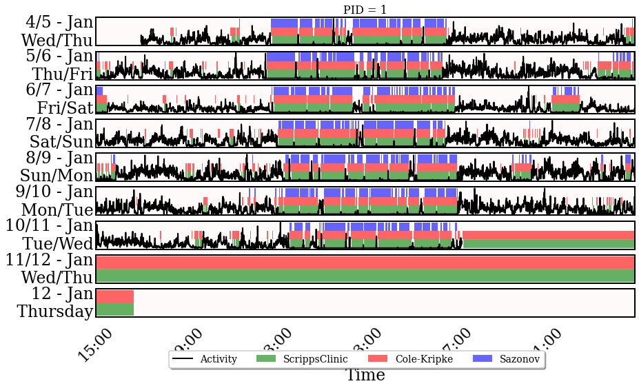

Title: Dont forget to add a title!¶
from hypnospy import Wearable
from hypnospy.data import MESAPreProcessing
from hypnospy.analysis import Viewer, NonWearingDetector, SleepWakeAnalysis
#from tf.keras.preprocessing import timeseries_dataset_from_array
import pandas as pd
import numpy as np
import matplotlib.pyplot as plt
---------------------------------------------------------------------------
ModuleNotFoundError Traceback (most recent call last)
<ipython-input-1-94781a92fd99> in <module>
----> 1 from hypnospy import Wearable
2 from hypnospy.data import MESAPreProcessing
3 from hypnospy.analysis import Viewer, NonWearingDetector, SleepWakeAnalysis
4 #from tf.keras.preprocessing import timeseries_dataset_from_array
5 import pandas as pd
ModuleNotFoundError: No module named 'hypnospy'
# MESAPreProcessing is a specialized class to preprocess csv files from Philips Actiwatch Spectrum devices used in the MESA Sleep experiment
# MESA Sleep dataset can be found here: https://sleepdata.org/datasets/mesa/
preprocessed = MESAPreProcessing("../data/examples_mesa/mesa-sample.csv")
# Wearable is the main object in HypnosPy.
w = Wearable(preprocessed)
# In HypnosPy, we have the concept of ``experiment day'' which by default starts at midnight (00 hours).
# We can easily change it to any other time we wish. For example, lets run this script with experiment days
# that start at 3pm (15h)
w.change_start_hour_for_experiment_day(15)
# Sleep Wake Analysis module
sw = SleepWakeAnalysis(w)
sw.run_sleep_algorithm("ScrippsClinic", inplace=True) # runs alg and creates new col named 'ScrippsClinic'
sw.run_sleep_algorithm("Cole-Kripke", inplace=True) # runs alg and creates new col named 'Cole-Kripke'
sw.run_sleep_algorithm("Sazonov", inplace=True) # runs alg and creates new col named 'Sazonov'
# View results
v = Viewer(w)
v.view_signals(signal_categories=["activity"], signal_as_area=["ScrippsClinic", "Cole-Kripke", "Sazonov"],
colors={"area": ["green", "red", "blue"]}, alphas={"area": 0.6})
v.view_signals(signal_categories=["pa_intensity"], alphas={"area":0.6})
# Easily remove non-wearing epochs/days.
nwd = NonWearingDetector(w)
nwd.detect_non_wear(strategy="choi")
#nwd.check_valid_days(max_non_wear_minutes_per_day=180)
#nwd.drop_invalid_days()

---------------------------------------------------------------------------
ValueError Traceback (most recent call last)
<ipython-input-4-2694967f990d> in <module>
22 v.view_signals(signal_categories=["activity"], signal_as_area=["ScrippsClinic", "Cole-Kripke", "Sazonov"],
23 colors={"area": ["green", "red", "blue"]}, alphas={"area": 0.6})
---> 24 v.view_signals(signal_categories=["pa_intensity"], alphas={"area":0.6})
25
26 # Easily remove non-wearing epochs/days.
~/.conda/envs/cp38/lib/python3.8/site-packages/hypnospy-0.0.4-py3.8.egg/hypnospy/analysis/visualization.py in view_signals(self, signal_categories, other_signals, signal_as_area, resample_to, sleep_cols, select_days, zoom, alphas, colors, edgecolors, labels, text, close)
85 figs = []
86 for wearable in self.wearables:
---> 87 fig = Viewer.view_signals_wearable(wearable, signal_categories, other_signals, signal_as_area, resample_to,
88 sleep_cols, select_days, zoom, alphas, colors, edgecolors, labels, text,
89 close)
~/.conda/envs/cp38/lib/python3.8/site-packages/hypnospy-0.0.4-py3.8.egg/hypnospy/analysis/visualization.py in view_signals_wearable(wearable, signal_categories, other_signals, signal_as_area, resample_to, sleep_cols, select_days, zoom, alphas, colors, edgecolors, labels, text, close)
125 cols.append(pa)
126 else:
--> 127 raise ValueError("PA Intensity levels not available for PID %s" % (wearable.get_pid()))
128
129 elif signal == "sleep":
ValueError: PA Intensity levels not available for PID 1